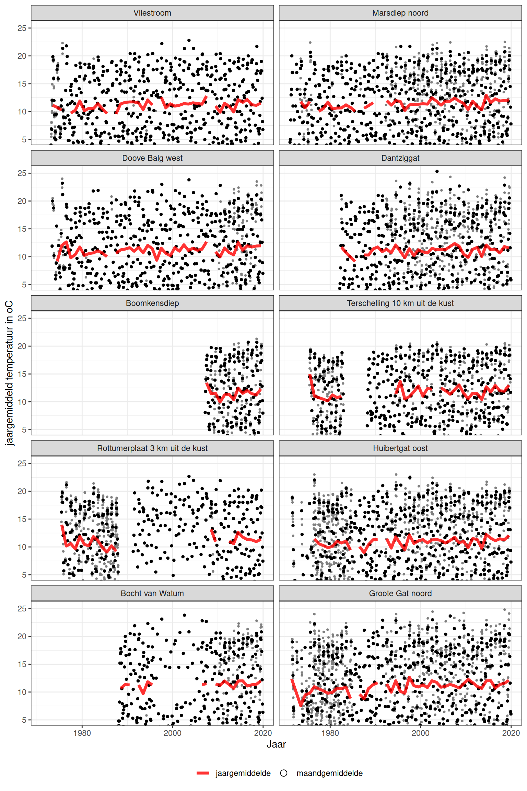
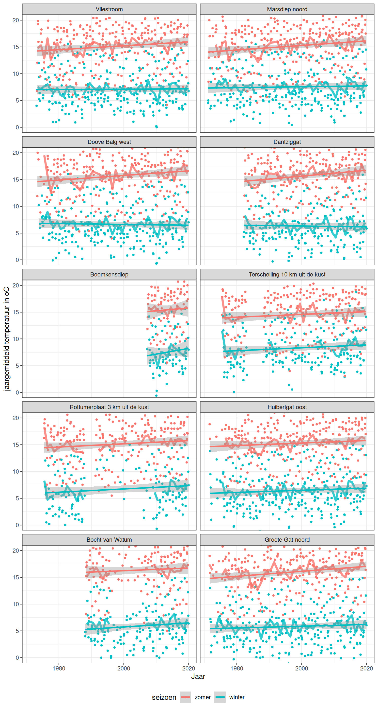
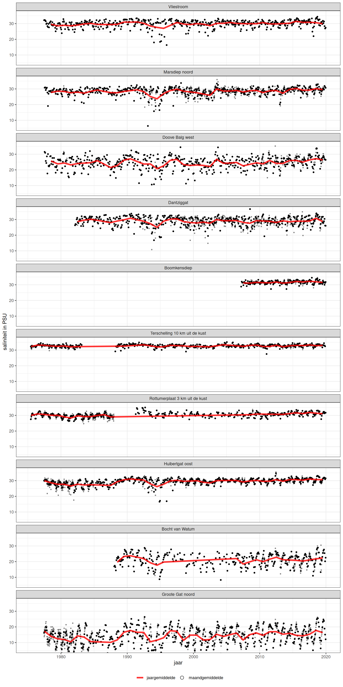
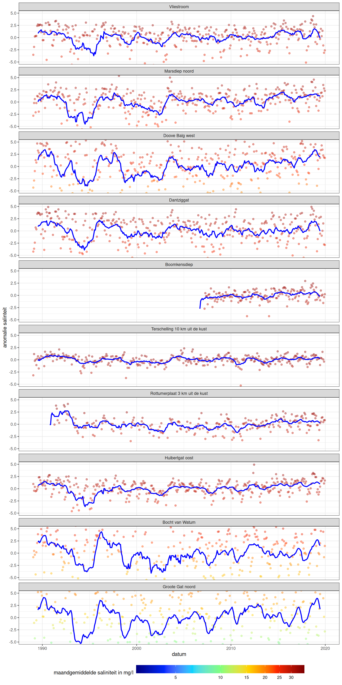
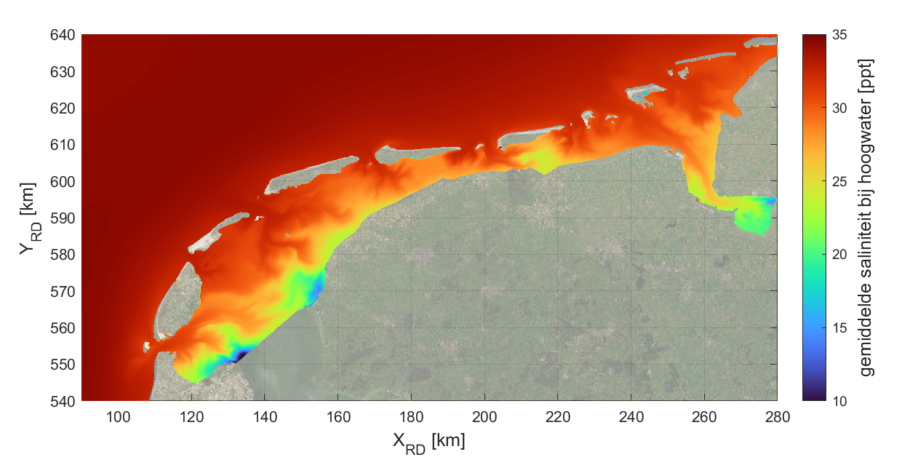
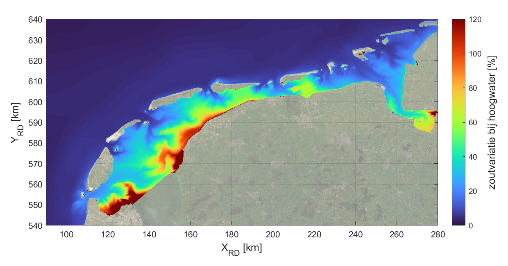
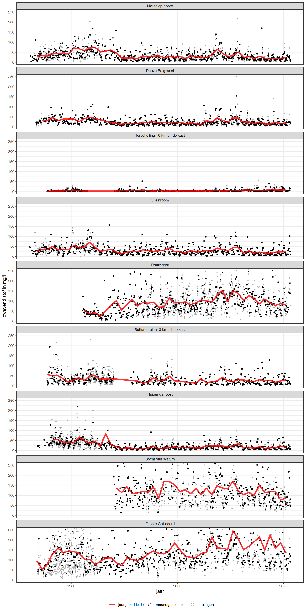
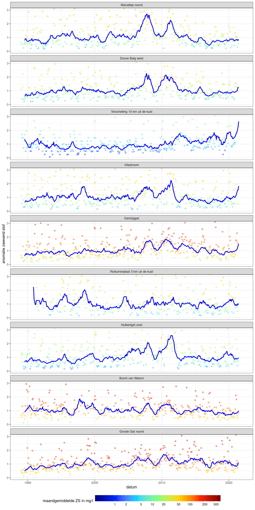
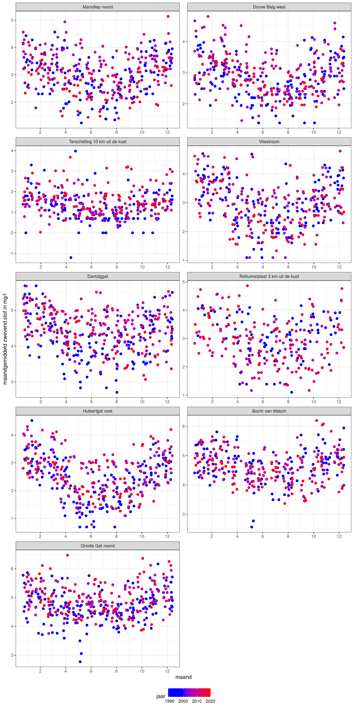

Hoofdstuk 5 Fysische waterkwaliteit
5.1 Afbakening, definitie en herkomst
Belang
De fysische waterkwaliteit (watertemperatuur, saliniteit en concentratie zwevende stof) is mede bepalend voor morfologische veranderingen en voor het wel of niet voorkomen van biota, en de groei ervan. Veranderingen in watertemperuur, saliniteit en concentratie zwevende stof kunnen ook duiden op veranderingen in zoetwaterafvoer, getijvoortplanting en/of windpatronen (zie hoofdstuk 3 en hoofdstuk 4).
Een hogere watertemperatuur zorgt voor snelle groei van organismen zoals algen, maar een te hoge temperatuur is nadelig voor het zuurstofgehalte van het water. Ook is de viscositeit (‘stroperigheid’) van het water temperatuursafhankelijk, waardoor de temperatuur ook stromingspatronen beïnvloedt.
Saliniteitsverschillen zorgen voor dichtheidsverschillen die stromingen aandrijven, en saliniteit is een belangrijke factor voor het wel of niet voorkomen van veel biota. Er zijn gemeenschappen van bodemdieren die alleen kunnen overleven bij bepaalde saliniteit en die maar voor een beperkte duur een overschrijding of onderschrijding van deze waarden kunnen verdragen. Voor sommige soorten zijn verschillen in saliniteit dus stressvol, terwijl andere soorten juist een (geleidelijke) overgang van zout naar zoet nodig hebben om succesvol te kunnen paren of ontkiemen. De dichtheidsverschillen (zoet water is lichter dan zout water) drijven een gravitatiecirculatie aan, waarbij de stroming aan de bodem netto richting de zoetwaterbron (meestal landwaarts) is gericht en zeewaarts aan de wateroppervlakte. Omdat de sedimentconcentraties (zwevende stof) hoger zijn nabij de bodem dan nabij de oppervlakte, leidt dit ertoe dat er netto slib in de Waddenzee kan worden geïmporteerd.
De concentratie zwevende stof is, in combinatie met de stroomsnelheid en waterdiepte, een cruciale factor in het transport van slib en organisch materiaal. Sedimentatie van slib in vaargeulen en havens heeft gevolgen voor de toegankelijkheid en leidt tot baggerwerkzaamheden. Slib sedimenteert ook buiten havens en vaargeulen, wat op de middellange termijn invloed heeft op de morfologie en daarmee de debieten en evenwichtsdieptes van de getijgeulen. Op de langere termijn is slibsedimentatie ook van belang voor het meegroeien met (versnelde) zeespiegelstijging. In ecologisch opzicht is de concentratie zwevende stof ook relevant: het bepaalt de lichtdoordringing in de waterkolom en is daarmee een indicator voor de hoeveelheid licht die beschikbaar is voor fotosynthese. De zwevende stof is ook (beperkt) indicatief voor de zuurstofvraag van het water. Aan het zwevend stof zijn ook voedingsstoffen voor algen en bodemdieren gehecht. Erg hoge concentraties kunnen echter nadelig zijn voor filterfeeders zoals schelpdieren, terwijl enige troebelheid (jonge) vis juist bescherming kan bieden tegen zichtjagers.
Afbakening
Naast de fysische waterkwaliteit zijn ook de chemische en biologische waterkwaliteit (bijv. nutriënten, verontreinigingen, fytoplankton) van belang voor biota. Die zijn niet in deze rapportage opgenomen omdat we ons hier beperken tot de morfologie. Ook een aantal meteorologische parameters -zoninstraling, luchttemperatuur en bewolkingsgraad- die de watertemperatuur mede bepalen zijn niet afzonderlijk opgenomen in deze systeemrapportage; de watertemperatuur als resultante en meest direct bepalende wél.
Databronnen
De fysische waterkwaliteitsparameters worden tweewekelijks tot maandelijks bemeten vanaf een schip op 1 m onder het wateroppervlak via het meetnet Monitoring Waterstaatkundige Toestand des Lands (MWTL), zie ook Appendix A.6. De MWTL metingen zijn beschikbaar op locaties in de Waddenzee, Noordzee en het Eems-estuarium zoals aangegeven in figuur 5.1. Vroeger werd op veel meer locaties de waterkwaliteit bemeten. Voor deze systeemrapportage is ervoor gekozen om alleen de nog actieve meetpunten op te nemen. De locaties Bocht van Watum en Rotummerplaat 3 km uit de kust zijn in het verleden verplaatst en daarom tweemaal terug te vinden in de kaart.
Bovengenoemde MWTL-metingen zijn puntmetingen en bieden geen gebiedsdekkende informatie die wel belangrijk kan zijn in het duiden van lokale veranderingen in biotiek en morfologie. Gebiedsdekkende informatie kan wel gegenereerd worden met modellen. De modeldata die ten grondslag ligt aan de Ecotopenkaart (van stroomsnelheden, orbitaalsnelheden en saliniteit) zal in de toekomst in deze systeemrapportage ontsloten worden.
Een andere ontoereikendheid van de MWTL metingen is de beperkte frequentie (tweewekelijks tot maandelijks), waardoor kortere fluctuaties, zoals gedurende een getijcyclus, een springtij-doodtijcyclus en bijvoorbeeld extreem weer, niet waargenomen kunnen worden. Deze fluctuaties kunnen echter wel sterk bepalend zijn voor de conditie van biota - denk aan een hittegolf- of morfologische ontwikkelingen. De MWTL metingen zijn wel zeer waardevol voor her signaleren van trendmatige veranderingen over een langere periode.
Figuur 5.1: Huidige locaties met MWTL metingen in de relevante delen van de Noordzee, de Waddenzee en het Eems-estuarium.
5.2 Watertemperatuur
Figuur 5.2 toont de jaargemiddelde watertemperatuur in rood, de maandgemiddelden als zwarte punten en de individuele metingen als grijze punten. De punten laten de seizoensdynamiek zien met hogere waarden in de zomer (tot 20-25 graden Celcius). De locaties die verder in de bekkens liggen tonen daarbij iets hogere piektemperaturen dan de meetpunten in dieper water, die gelegen zijn nabij de zeegaten en in de Noordzee.

Figuur 5.2: Jaargemiddelde watertemperatuur in de Waddenzee (rode lijn), maandgemiddelden (punten) en individuele metingen (kleinste punten). Jaargemiddelden zijn alleen berekend wanneer er voor minstens 11 maanden gegevens waren.
De zomer- en wintergemiddelden (figuur 5.3) laten een stijging in de watertemperatuur over de periode 1972-2020 zien. Op alle stations is de gemiddelde watertemperatuur in de zomer (tussen 1 april en 30 september) toegenomen, van net onder de 15 graden in de jaren zeventig tot net boven de 16 graden in recente jaren. Voor de wintertemperaturen (bepaald over de periode tussen 1 oktober en 31 maart) laten niet alle stations een duidelijke toename zien; deze ligt over het het algemeen rond de 7 graden. In de winter tonen de Noordzeestations hogere temperaturen, en in de zomer juist lagere temperaturen dan de stations die verder in de bekkens liggen.

Figuur 5.3: Zomer- (1 apr-30 sep; rood) en wintergemiddelde (1 okt-31 maart; groen) watertemperatuur in de Waddenzee, met regressielijnen. Seizoensgemiddelden zijn alleen berekend en meegenomen in de grafiek wanneer er 5 of meer metingen per seizoen beschikbaar waren.
5.3 Saliniteit
5.3.1 MWTL-metingen
De metingen (figuur 5.4) laten een seizoensfluctuatie van enkele ppt zien die gekoppeld is aan de seizoensfluctuatie in de zoetwaterafvoeren. De jaargemiddelde saliniteitswaarden laten fluctuaties zien zoals de dip rond 1995, maar langjarige trends zijn niet duidelijk zichtbaar. Daartoe wordt ook de afwijking van het jaargemiddelde ten opzichte van het langjarig gemiddelde uitgezet (figuur 5.5). Hierin is de dip rond 1995 duidelijker terug te zien, maar lijkt de saliniteit in de Wadden sinds 2003 ook licht toe te nemen. Vooral in het Eems-estuarium zijn de relatieve afwijkingen groot, tot een factor 5. In de Waddenzee zijn de afwijkingen verder in de bekkens, op locaties dichter bij de spuilocaties, zoals te verwachten ook groter dan op de Noordzee en nabij de zeegaten. De saliniteit lijkt de laatste jaren bij station Doove Balg toe nemen, wat overeenkomt met een afname in het spuidebiet bij Den Oever (zie 3.13).

Figuur 5.4: Jaargemiddelde saliniteit in de Waddenzee. Maandgemiddelden (punten) en individuele metingen (kleinste punten) geven het bereik aan. Jaargemiddelde is alleen berekend bij meer dan 10 metingen per jaar.

Figuur 5.5: Anomalie (afwijking van het langjarig gemiddelde) van saliniteit voor de gehele meetperiode
5.3.2 Vlakdekkende gemodelleerde saliniteit
Het is belangrijk om te realiseren dat de hier weergegeven representatieve saliniteit geen gemeten data betreft maar gebaseerd is op modelbewerkingen voor het maken van de huidige ecotopenkaarten. Hoewel geen gemeten data, is deze vlakdekkende saliniteit op verzoek van veel gebruikers toch opgenomen in de DSR.
Hieronder zijn de gemiddelde saliniteit bij hoogwater en de variatie op basis van een 3D simulatie over het volledige jaar 2019 weergegeven. Er zijn acht zoetwaterafvoeren en spuidebieten; de kleinere zoetwaterafvoeren uit paragraaf 3.13.3 ontbreken omdat deze bij het maken van de simulaties niet beschikbaar waren. Per roostercel is het tijdsgemiddelde bepaald over de saliniteitswaarden tijdens de piek hoogwater. De variatie in saliniteit is bepaald als 4 maal de standaarddeviatie gedeeld door dit gemiddelde.
Het Waddenzeebekken is duidelijk minder zout dan de Noordzee, met forse ruimtelijke verschillen in saliniteit (10-35). De laagste saliniteit (10-15) treedt op bij de zoetwaterafvoeren, vooral rondom de spuisluizen van het Ijsselmeer: Den Oever en Kornwerderzand. Ook ten oosten van Harlingen en het Lauwersmeer is de saliniteit wat lager (20-25). Ook in Eems-Dollard is de saliniteit lager (15-25). De variatie is het grootst bij diezelfde spuisluizen -bij Den Oever vooral aan de westkant, inclusief Balgzand, en bij Kornwerderzand juist oostelijk, richting Harlingen en in de Eems. Opvallend is de substantiële variatie (ca. 50%) over de volledige wantijen in de Oostelijke Waddenzee, terwijl de variatie op de ondieptes in de Westelijke Waddenzee tussen circa 20% en 40% ligt.
De saliniteit en variatie daarin zijn in detail te bekijken en downloaden via de Waddenviewer van Datahuis Wadden.
Voor details van het gebruikte model en de berekeningswijze wordt verwezen naar Van Weerdenburg (2022) download.

Figuur 5.6: Kaart van de gemiddelde saliniteit bij hoogwater (2019) afkomstig uit modelberekeningen gebruikt voor de Ecotopenkaart.

Figuur 5.7: Kaart van de variatie in gemiddelde saliniteit bij hoogwater (2019) afkomstig uit modelberekeningen gebruikt voor de Ecotopenkaart, bepaald als [(4 x standaarddeviatie) / gemiddelde zoutgehalte] x 100%.
Figuur 5.8: Basiskaarten voor ecotopenkaart 2022 voor de Waddenzee.
5.4 Zwevend stof
Zwevende stof wordt ook wel SSC, gesuspendeerde sedimentconcentratie of sedimentconcentratie in de waterkolom genoemd. Figuur 5.9 toont de individuele metingen (kleine grijze punten) en de maandgemiddelden (zwarte punten). Uit deze data kan zowel de fluctuatie in zwevende stof worden afgelezen als de ruimtelijke variatie. In de Noordzee zijn de concentraties veel lager dan verder landwaarts in de Waddenzee. De rode lijn geeft de jaargemiddelden weer, daaruit blijken ook grote fluctuaties en geen duidelijke langjarige trends.

Figuur 5.9: Concentratie van zwevend stof in de Waddenzee en Eems estuarium. Jaargemiddeld (lijn), maandgemiddeld (zwarte punten), en individuele metingen (kleine grijze punten).
Indien het zwevende stofgehalte wordt gelogtransformeerd en het maandgemiddelde wordt uitgedrukt als relatieve afwijking ten opzichte van het langjarig gemiddelde (figuur 5.10), dan zijn de fluctuaties veel beter zichtbaar. De tijdseries vertonen gelijke patronen, met pieken rond 2008 en 2012, maar geen langjarige trends. Hoewel de absolute concentraties van zwevende stof sterk verschillend zijn (figuur 5.9), is de relatieve afwijking van het langjarig gemiddelde vergelijkbaar. In Herman et al. (2018) zijn de karakteristieken van zwevende stof tijdseries in meer detail beschreven.

Figuur 5.10: Anomalie van gesuspendeerd zwevend stof voor de gehele meetperiode. De grootte van de anomalie (blauwe lijn; log maandgemiddelde - gemiddelde log maandgemiddelde) staat op de verticale as. De gekleurde punten geven de maandgemiddelde zwevende stof concentratie aan.
Het seizoensverloop van zwevend stof (figuur 5.11) laat zien dat concentraties in de winter hoger zijn dan in de zomermaanden. Dit wordt onder andere veroorzaakt door meer opwerveling in de winter door hogere golven. Vastlegging van slib door algenmatten in de zomer en toegenomen flocculatie door algen in de zomer en daarmee bezinking van slib dragen ook bij aan de seizoensdynamiek.

Figuur 5.11: Seizoensvariatie van opgelost zwevend stof voor de periode 1989 - 2018.